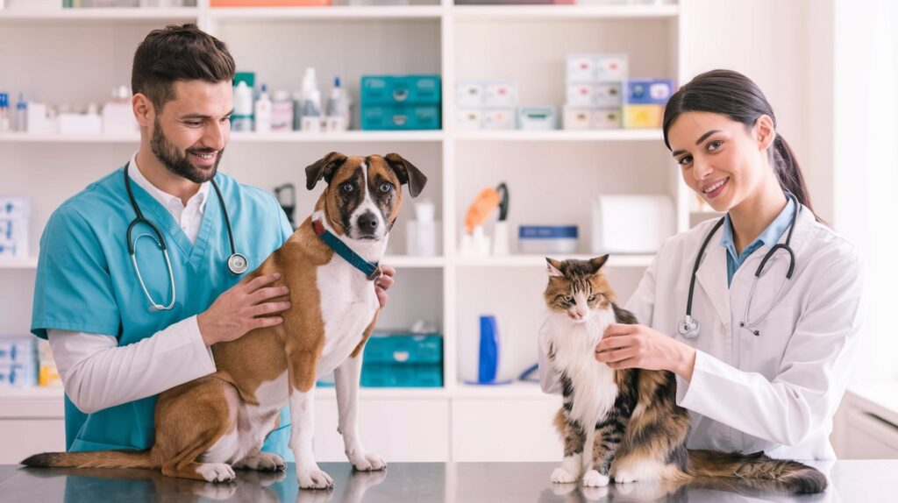
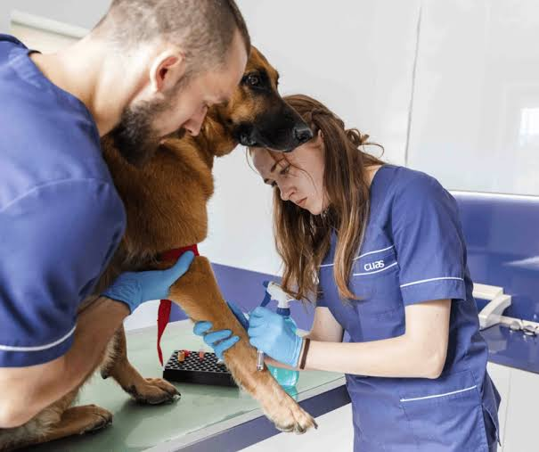

Nosotros
Veterinaria San Marcos es una clínica veterinaria ubicada en Rancagua, Región del Libertador General Bernardo O'Higgins. Fundada en 2009, atendemos mascotas domésticas — principalmente perros y gatos, aunque también conejos y aves — con servicios de consulta general, vacunación, cirugía menor, desparasitación y control de peso.
Atendemos un promedio de 25 pacientes al día, con un equipo comprometido en entregar una atención cercana y de calidad a cada paciente y su familia.
Nuestro equipo
-

Médico veterinario
2 médicos veterinarios a cargo de las consultas y cirugías.
-

Técnico veterinario
Apoya en consultas, vacunación y administración de medicamentos.
-
Recepcionista
Encargada de agendar y confirmar las citas de la clínica.